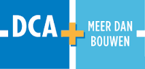

Huisstijl
Tue, May 10, 2016Huisstijl DCA
Het logo van DCA bestaat uit twee vierkanten die samenhangen door een plusteken. Op het ene vierkant staat ‘DCA’ en op het andere ‘Meer dan bouwen’. Op een verkoopfactuur staat in de linkerbovenhoek ook een logo. Dit keer is het alleen ‘DCA’ met een liggende streep langs beide kanten. Ze hebben ook een e-mailhandtekening, dit houdt in dat het logo onder elke e-mail die naar buitenaf verstuurd wordt geplaatst wordt.
